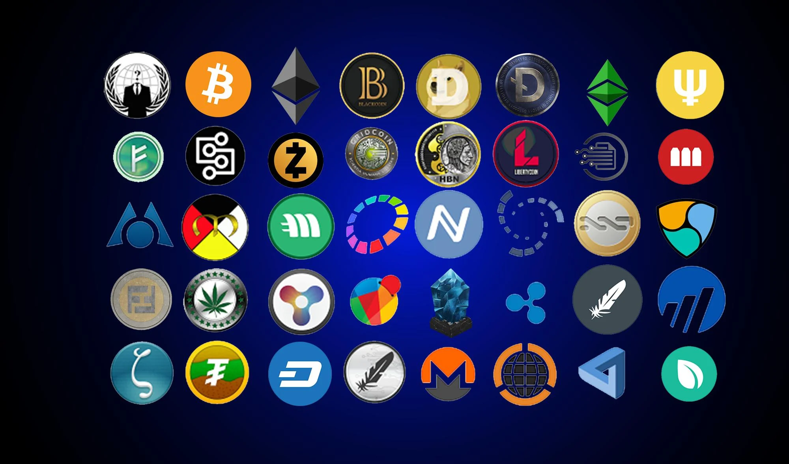

A cryptocurrency, crypto-currency, or crypto is a digital currency designed to work as a medium of exchange through a computer network that is not reliant on any central authority, such as a government or bank, to uphold or maintain it.[2] It is a decentralized system for verifying that the parties to a transaction have the money they claim to have, eliminating the need for traditional intermediaries, such as banks, when funds are being transferred between two entities.[3]
Individual coin ownership records are stored in a digital ledger, which is a computerized database using strong cryptography to secure transaction records, control the creation of additional coins, and verify the transfer of coin ownership.[4][5][6] Despite their name, cryptocurrencies are not considered to be currencies in the traditional sense, and while varying treatments have been applied to them, including classification as commodities, securities, and currencies, cryptocurrencies are generally viewed as a distinct asset class in practice.[7][8][9] Some crypto schemes use validators to maintain the cryptocurrency. In a proof-of-stake model, owners put up their tokens as collateral. In return, they get authority over the token in proportion to the amount they stake. Generally, these token stakers get additional ownership in the token over time via network fees, newly minted tokens, or other such reward mechanisms.[10]
Cryptocurrency does not exist in physical form (like paper money) and is typically not issued by a central authority. Cryptocurrencies typically use decentralized control as opposed to a central bank digital currency (CBDC).[11] When a cryptocurrency is minted, or created prior to issuance, or issued by a single issuer, it is generally considered centralized. When implemented with decentralized control, each cryptocurrency works through distributed ledger technology, typically a blockchain, that serves as a public financial transaction database.[12] Traditional asset classes like currencies, commodities, and stocks, as well as macroeconomic factors, have modest exposures to cryptocurrency returns.[13]
The first decentralized cryptocurrency was Bitcoin, which was first released as open-source software in 2009. As of March 2022, there were more than 9,000 other cryptocurrencies in the marketplace, of which more than 70 had a market capitalization exceeding $1 billion.[14]
In 1983, American cryptographer David Chaum conceived of a type of cryptographic electronic money called ecash.[15][16] Later, in 1995, he implemented it through Digicash,[17] an early form of cryptographic electronic payments. Digicash required user software in order to withdraw notes from a bank and designate specific encrypted keys before it can be sent to a recipient. This allowed the digital currency to be untraceable by a third party.
In 1996, the National Security Agency published a paper entitled How to Make a Mint: the Cryptography of Anonymous Electronic Cash, describing a cryptocurrency system. The paper was first published in an MIT mailing list[18] and later in 1997 in The American Law Review.[19]
In 1998, Wei Dai described "b-money", an anonymous, distributed electronic cash system.[20] Shortly thereafter, Nick Szabo described bit gold.[21] Like Bitcoin and other cryptocurrencies that would follow it, bit gold (not to be confused with the later gold-based exchange BitGold) was described as an electronic currency system which required users to complete a proof of work function with solutions being cryptographically put together and published.
In January 2009, Bitcoin was created by pseudonymous developer Satoshi Nakamoto. It used SHA-256, a cryptographic hash function, in its proof-of-work scheme.[22][23] In April 2011, Namecoin was created as an attempt at forming a decentralized DNS. In October 2011, Litecoin was released which used scrypt as its hash function instead of SHA-256. Peercoin, created in August 2012, used a hybrid of proof-of-work and proof-of-stake.[24]
On 6 August 2014, the UK announced its Treasury had commissioned a study of cryptocurrencies, and what role, if any, they could play in the UK economy. The study was also to report on whether regulation should be considered.[25] Its final report was published in 2018,[26] and it issued a consultation on cryptoassets and stablecoins in January 2021.[27]
In June 2021, El Salvador became the first country to accept Bitcoin as legal tender, after the Legislative Assembly had voted 62–22 to pass a bill submitted by President Nayib Bukele classifying the cryptocurrency as such.[28]
In August 2021, Cuba followed with Resolution 215 to recognize and regulate cryptocurrencies such as Bitcoin.[29] In September 2021, the government of China, the single largest market for cryptocurrency, declared all cryptocurrency transactions illegal. This completed a crackdown on cryptocurrency that had previously banned the operation of intermediaries and miners within China.[30]
On 15 September 2022, the world second largest cryptocurrency at that time, Ethereum transitioned its consensus mechanism from proof-of-work (PoW) to proof-of-stake (PoS) in an upgrade process known as "the Merge". According to the Ethereum Founder, the upgrade can cut Ethereum's energy use by 99.9% and carbon-dioxide emissions by 99.9%.[31]
On 11 November 2022, FTX Trading Ltd., a cryptocurrency exchange, which also operated a crypto hedge fund, and had been valued at $18 billion,[32] filed for bankruptcy.[33] The financial impact of the collapse extended beyond the immediate FTX customer base, as reported,[34] while, at a Reuters conference, financial industry executives said that "regulators must step in to protect crypto investors."[35] Technology analyst Avivah Litan commented on the cryptocurrency ecosystem that "everything...needs to improve dramatically in terms of user experience, controls, safety, customer service."[36]
| Country | Cryptocurrency Usage | Percentage of Total Usage |
|---|---|---|
| Japan | Widely Used | 14.3% |
| South Korea | Widely Used | 11.0% |
| United States | Widely Used | 10.1% |
| Canada | Widely Used | 5.5% |
| United Kingdom | Widely Used | 4.7% |
| Germany | Widely Used | 4.7% |
| Netherlands | Widely Used | 3.1% |
| France | Moderate Usage | 2.5% |
| Australia | Moderate Usage | 2.2% |
| Nigeria | Emergency Usage | 0.7% |
| South Africa | Emergency Usage | 0.6% |
| Brazil | Emergency Usage | 0.6% |
| China | Restricted/Illegal | 28.3% |
| Russia | Restricted/Illegal | 3.9% |
| India | Restricted/Illegal | 2.8% |
| Indonesia | Restricted/Illegal | 1.8% |
| Vietnam | Restricted/Illegal | 1.1% |
The data was taken long time ago,so the current usage data may vary
BackCreated and managed by